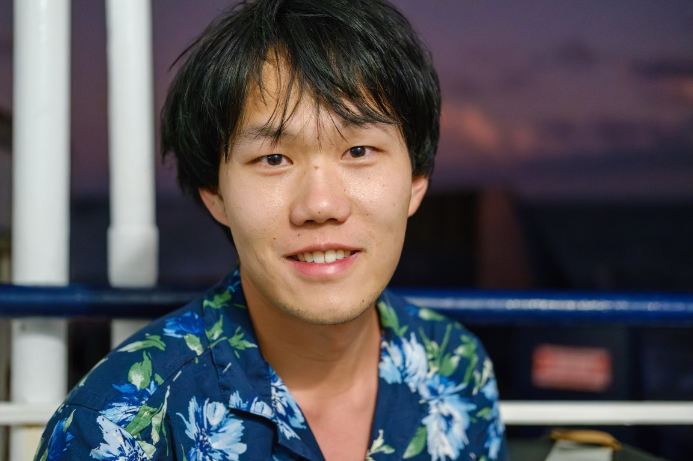

|
Di Wu
|
 |
I am a third-year Ph.D. student in the Applied Mathematics & Statistics, and Scientific Computation (AMSC) program at the University of Maryland, College Park. I am fortunate to be advised by Prof. Haizhao Yang. I also work closely with Prof. Ling Liang. I received my bachelor's and master's degrees in Computational Mathematics from Wuhan University, under the guidance of Prof. Yuling Jiao and Prof. Xiliang Lu. I also spent time as a research intern at JD Explore Academy, where I was mentored by Prof. Li Shen.
Current interests
I am interested in how AI agents can support mathematical reasoning and scientific discovery, and how uncertainty can be quantified to inform reliable decisions. I welcome discussions with anyone interested in these topics.
My previous research focused on Bayesian statistics, optimization, and reinforcement learning.
e-mail: dwuwd 'at’ umd 'dot’ edu
|
FARMS: A Verifiable Foundation for Automated Computational Science
Di Wu, Ling Liang, Haizhao Yang
arXiv preprint, 2026
[arXiv] [Website]
SciΠvot: Benchmarking Principal-Investigator Judgment at Pivotal Moments of Scientific AutoResearch Agents
Youran Sun, Xingyu Ren, Chugang Yi, Kejia Zhang, Di Wu, Yingkang Cao, Allen Zhou, Jianping Ye, Suying Liu, Jiaxuan Guo, Jianda Du, Weicheng Ye, Kecheng Liu, Hefan Zhang, Haixin Wang, Jie Xiao, Eric Yang, Haizhao Yang
arXiv preprint, 2026
[arXiv]
Beyond Expected Information Gain: Stable Bayesian Optimal Experimental Design with Integral Probability Metrics and Plug-and-Play Extensions
Di Wu, Ling Liang, Haizhao Yang
arXiv preprint, 2026
[arXiv]
Randomized Subsystem Descent for Fermion-to-Qubit Mapping
Gengzhi Yang, Di Wu, Haizhao Yang, Xiaodi Wu, Ji Liu
Accepted to Journal of Chemical Theory and Computation, 2026
[arXiv]
PINS: Proximal Iterations with Sparse Newton and Sinkhorn for Optimal Transport
Di Wu, Ling Liang, Haizhao Yang
arXiv preprint, 2025
[arXiv]
Neural Network Approximation for Pessimistic Offline Reinforcement Learning
Di Wu, Yuling Jiao, Li Shen, Haizhao Yang, Xiliang Lu
Proceedings of the AAAI Conference on Artificial Intelligence (AAAI), 2024
[arXiv] [Published version]
Teaching
Teaching Assistant
University of Maryland, College Park
(leading discussion sections, holding office hours, and grading)
MATH 240: Introduction to Linear Algebra
STAT 400: Applied Probability and Statistics
STAT 426: Introduction to Data Science and Machine Learning
AMSC 460: Computational Methods
AMSC 660: Scientific Computing I
Earlier TA Experience
Wuhan University: Teaching assistant for graduate courses including Numerical Analysis, Statistical Computing, High Dimensional Data and Machine Learning, Theory and Algorithms of Machine Learning, and Advanced Engineering Mathematics.
National Tianyuan Mathematics Center: Teaching assistant for the summer school on ‘‘Mathematical Theory and Applications of Deep Learning’’.
Activities
Talks
Beyond Expected Information Gain: Stable Bayesian Optimal Experimental Design with Integral Probability Metrics and Plug-and-Play Extensions [Slide]
SIAM Conference on Mathematics of Data Science, Salt Lake City, November 2026
2026 INFORMS Annual Meeting, San Francisco, November 2026
Sayas Numerics Day (formerly DelMar Numerics Day), May 2026
Professional Services & Activities
Review Panelist, NASA Research Proposal Review
Co-organizer, Minisymposium on Optimal Transport, SIAM MDS 2026 (link)
Reviewer: NeurIPS; Frontiers in Applied Mathematics
Awards & Honors
Mark E. Lachtman Award, University of Maryland, 2026
Dean's Fellowship, University of Maryland, 2025, 2026
Earlier Awards & Honors
Lei Jun Educational Fund (around 5,000 USD), Wuhan University
First-Class Scholarship (Undergraduate & Graduate), Wuhan University
First Prize, Contemporary Undergraduate Mathematical Contest in Modeling (Team Leader), CSIAM
Outstanding Graduate, Wuhan University
Merit Student (3 times), Wuhan University
First Prize, National High School Mathematics Competition
First Prize, National High School Physics Competition
Last updated: November 2026
|